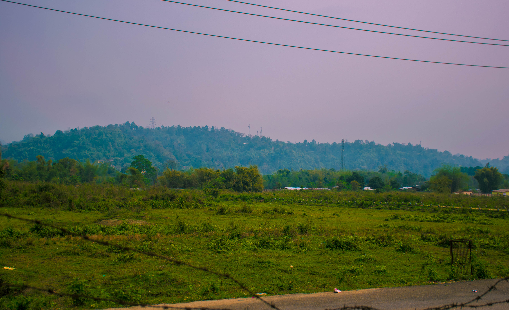
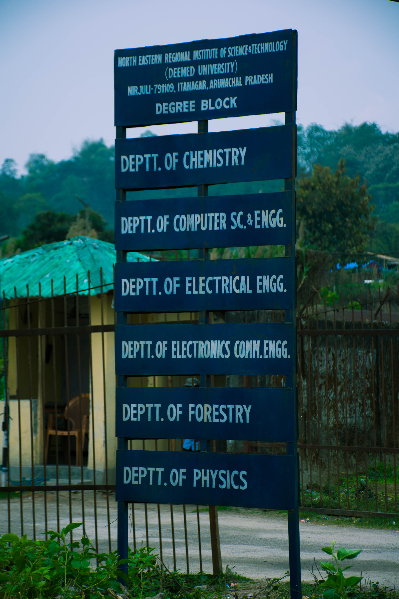
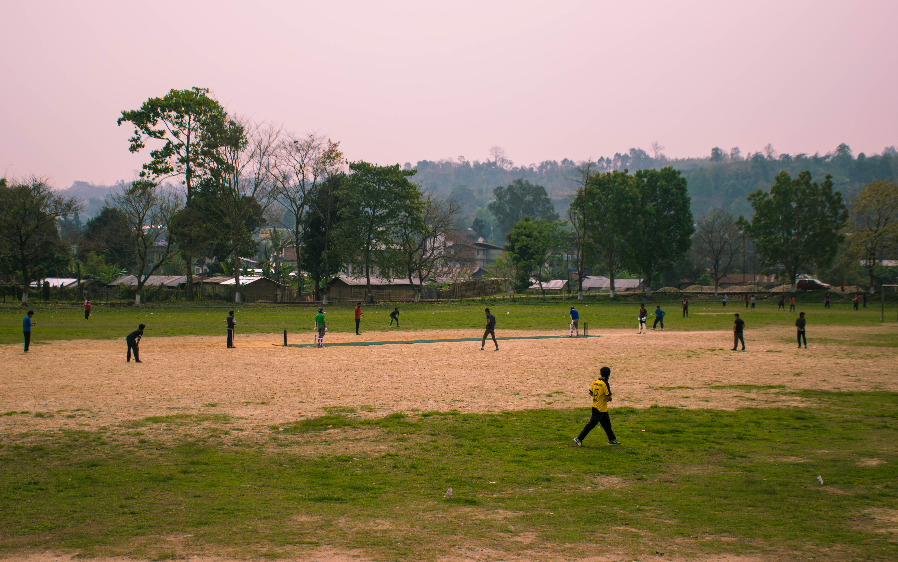
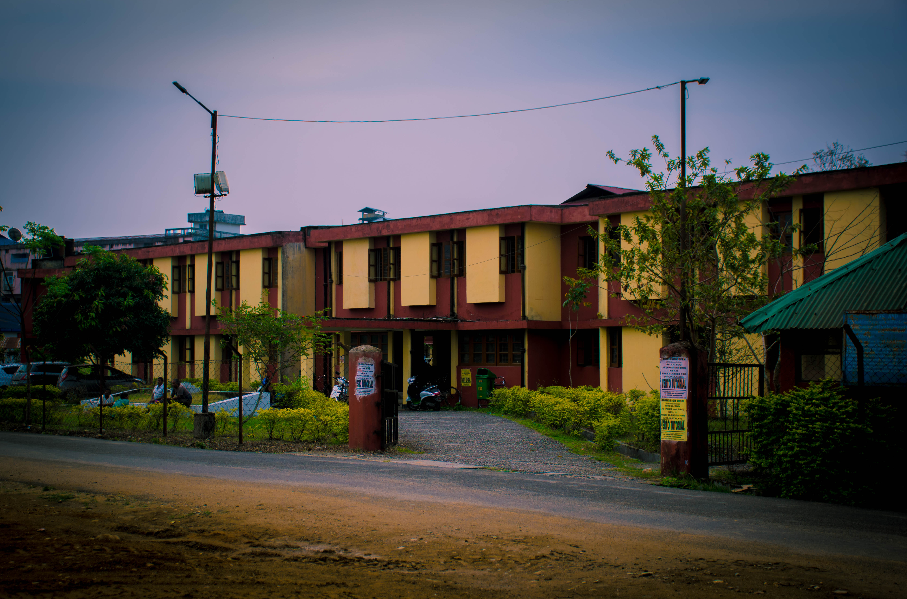
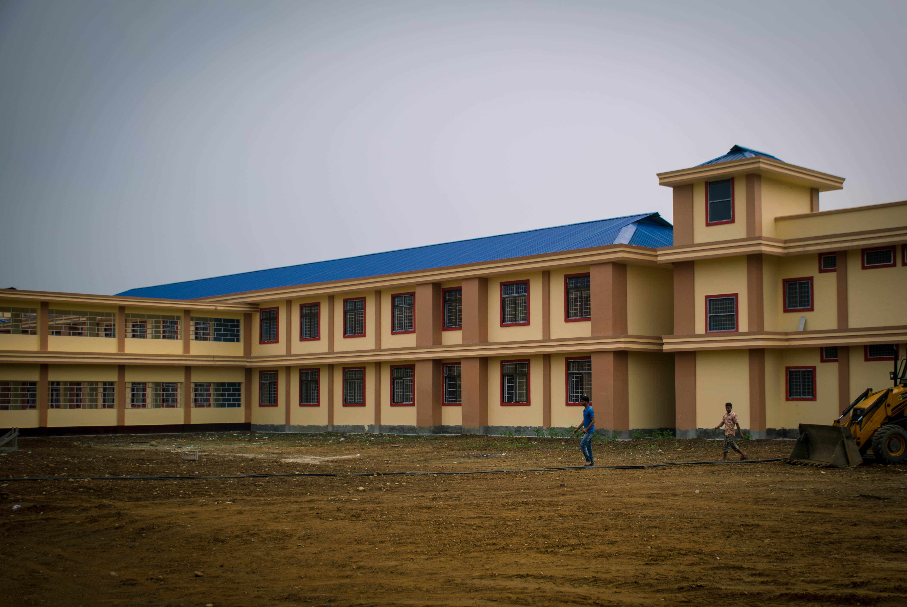
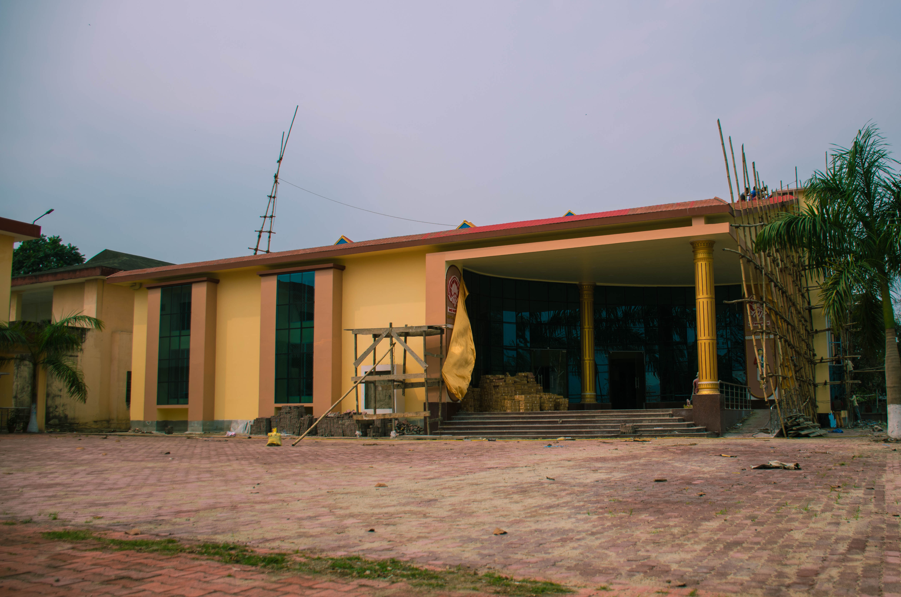

North Eastern Regional Institute Of Science And Technology(or NERIST) is a science and technology oriented higher education institute in Nirjuli, Itanagar,Papum Pare district, in the Indian state of Arunachal Pradesh.Established in 1984, it is a deemed university, autonomous, fully funded and controlled by the Ministry of Human Resource Development,Department of Education, Government of India.
Natural views

The Foundation stone of the institute was set on 4 March 1984 by the President of India,Giani Zail Singh. The institute started operating in 1986 with six base modules. Six diploma modules started in 1988and by 1990 seven degree modules were added. The institute was funded by NEC until, on April 1994, it came directly under the funding and control of the Ministry of Human Resourse Development(MHRD). In May 2005 it was granted deemed university status.NERIST gained approval for the postgraduate programme from AICTE and MHRD in 1996, and the latter was implemented by 2006.
Degree Block

NERIST playground

The national highway NH52 divides the NERIST campus into two. The institute is fully residential, and is spread over 500 acres of land. There are nine hostel blocks with a capacity of 1800 boarders; six of these house male undergraduate students, one postgraduate male students and research scholars and the other 2 for female students.The campus has faculty and staff quarters,Medical health Unit, guest houses, Kendriya Vidyalaya, KG School,temple, church, namghar and a bank.
PG Hostel

More buildings are under construction, like new library, new auditorium and blocks etc.
New Boy's Hostel

New Library

|